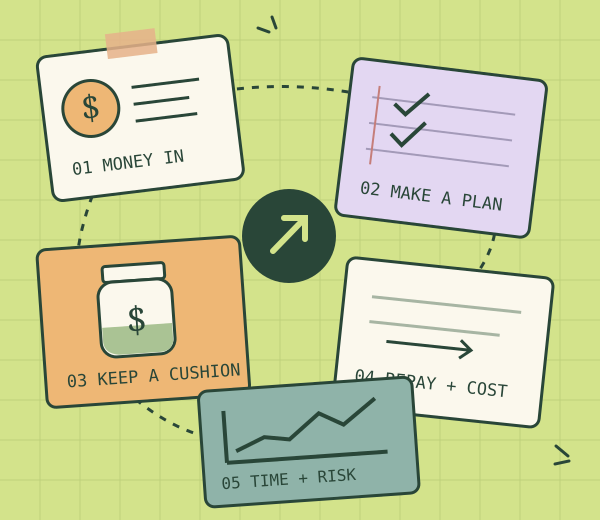
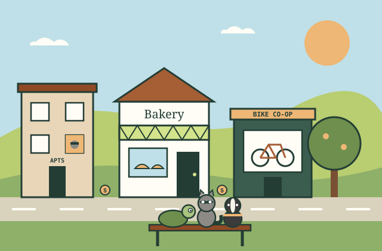

The Pocket-Money Club
A clubhouse for money basics, small saving goals, and questions worth asking.
The piggy bank has called this meeting to order.
Start exploringPERSONAL FINANCE, WITH PERSONALITY
Five different starting points.
The same essential life skill.
Understand what comes in, what goes out, and how today’s choices shape tomorrow. Learn through clear explanations, playful illustrations, and ideas you can explore. Each level ends with an optional summary and quiz. Version 5 adds a money-choice game that anyone can play.
Self-paced · No sign-in · Optional quizzes add about 2–4 minutes per level

A little clarity.
A lot more possibility.

NEW IN VERSION 5 · FOR ALL FIVE LEVELS
Pick a goal, get paid, and make ten money choices in a small town with a raccoon roommate, a very patient tortoise, and one inconveniently fragile phone. Watch money move between your wallet, savings jar, seed pot, and debt meter, then see a recap measured in more than one number.
Play the gamePICK YOUR LEARNING ENVIRONMENT
Start with the setting that fits you, or visit all five. Each course stands on its own. These are learning environments, not a ranking of people.
A clubhouse for money basics, small saving goals, and questions worth asking.
The piggy bank has called this meeting to order.
Start exploringPaychecks, plans, recurring costs, and why “Future Me” needs a little backup.
“Only $9 a month” has entered the chat.
Start exploringA practical elective in budgets, aid, bill dates, borrowing, and longer-term thinking.
Office hours for your bank balance.
Start exploringGive everyday bills, safety nets, debt, and long-term plans a place to live.
Some assembly required. You’ve got this.
Start exploringRevisit the fundamentals through liquidity, opportunity cost, fees, and uncertainty.
The model is confident. Ask it why.
Start exploringLEARNING THAT CONNECTS
Plain explanations, useful vocabulary, and examples that suit the setting.
Move a slider or switch a view. See the arithmetic and the assumptions.
Relate the ideas to one another, then leave with a takeaway of your own.
YOUR PLACE IS SAVED HERE
Chapter visits, course completion, and optional notes stay in this browser. They are not grades or proof of mastery. The money game saves its own place separately; use “Start over” inside the game to clear it.
0 of 5 courses marked complete
This clears only Money Moves progress and notes in this browser.
No account. No tracking service. No personal finance details required.